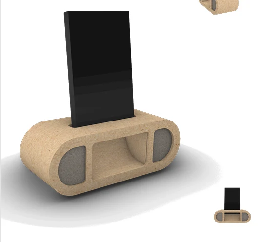
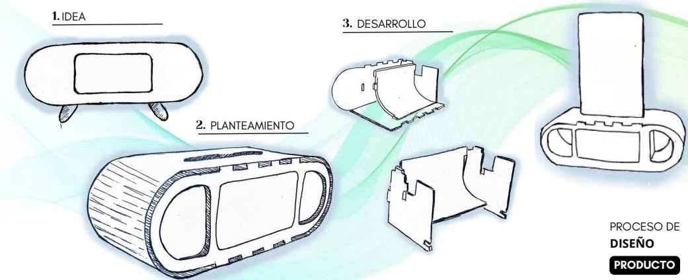
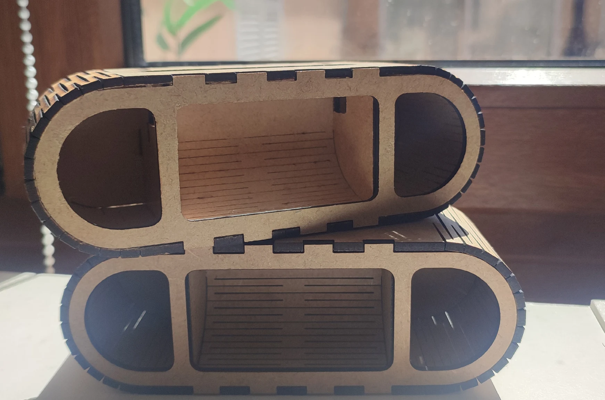

Diseño de producto
Altavoz
Diseño y fabricación de un altavoz con soporte para móvil. El análisis de un modelo existente dio paso a planos técnicos y a una nueva propuesta que trabaja tanto la funcionalidad como la forma del producto.






